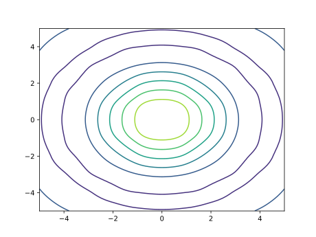
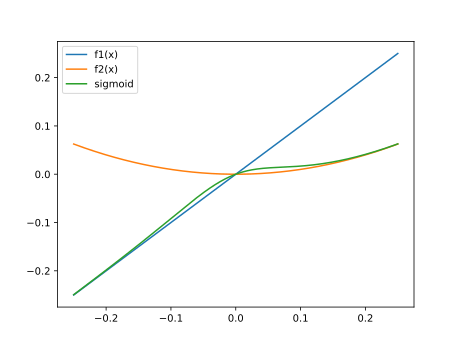

FLOWMath.jl
Examples of the available methods are shown below. More examples are available in the test suite (/test/runtests.jl)
Quadrature
Trapezoidal Integration
This is just simple trapezoidal integration using vectors. Gaussian quadrature is much better, but for times when we need to define a mesh for other purposes and cannot use an adaptive method a simple trapezoidal integration fits the bill.
using ..FLOWMath: trapz
x = range(0.0, stop=pi+1e-15, step=pi/100)
y = sin.(x)
z = trapz(x, y)1.9998355038874442FLOWMath.trapz — Functiontrapz(x, y)Integrate y w.r.t. x using the trapezoidal method.
There is also cumtrapz which returns the cumulative integral of y with respect to x
using FLOWMath: cumtrapz
x = range(0.0, stop=pi+1e-15, step=pi/100)
y = sin.(x)
z = cumtrapz(x, y)
extrema(z .- ((-cos.(x)) .- (-cos(x[1])))) # compare to the exact answer -cos(x) - -cos(0)(-0.00016449611255575647, 0.0)and a version cumtrapz! that writes the result to the first argument
using FLOWMath: cumtrapz!
x = range(0.0, stop=pi+1e-15, step=pi/100)
y = sin.(x)
z = similar(y)
cumtrapz!(z, x, y)
extrema(z .- ((-cos.(x)) .- (-cos(x[1])))) # compare to the exact answer -cos(x) - -cos(0)(-0.00016449611255575647, 0.0)FLOWMath.cumtrapz — Functioncumtrapz(x, y)Cumulatively integrate y w.r.t x using the trapezoidal method, returning an array the same size as x and y.
FLOWMath.cumtrapz! — Functioncumtrapz!(integral, x, y)Cumulatively integrate y w.r.t x using the trapezoidal method, writing the result to integral.
Root Finding
Brent's Method (1D functions)
Brent's method is an effective 1D root finding method as it combines bracketing methods (bisection) with fast quadratic interpolation. Thus, you can get near quadratic convergence but with safeguarding.
using ..FLOWMath: brent
f(x) = x^2 - 1.0
xstar, outputs = brent(f, -2.0, 0)(-1.0, (iter = 9, fcalls = 10, flag = "CONVERGED"))The above example shows basic usage. Additional inputs and outputs are available as described below.
FLOWMath.brent — Functionbrent(f, a, b; args=(), atol=2e-12, rtol=4*eps(), maxiter=100)1D root finding using Brent's method. Based off the brentq implementation in scipy.
Arguments
f: scalar function, that optionally takes additional argumentsa::Float, b::Float`: bracketing interval for a root - sign changes sign between: (f(a) * f(b) < 0)args::Tuple: tuple of additional arguments to pass to fatol::Float: absolute tolerance (positive) for rootrtol::Float: relative tolerance for rootmaxiter::Int: maximum number of iterations allowed
Returns
xstar::Float: a root of finfo::Tuple: A named tuple containing:iter::Int: number of iterations- 'fcalls::Int`: number of function calls
- 'flag::String`: a convergence/error message.
Interpolation
Akima Spline
An Akima spline is a 1D spline that avoids overshooting issues common with many other polynomial splines resulting in a more natural curve. It also only uses local support allowing for more efficient computation.
Interpolation is perhaps clearest through plotting so we'll load a plotting package for this examples.
using ..FLOWMath: akima, Akima, derivative, second_derivative, gradient
x = 0:pi/4:2*pi
y = sin.(x)
xpt = 0:pi/16:2*pi
ypt = akima(x, y, xpt)
figure()
plot(x, y, "o")
plot(xpt, ypt)or if you plan to evaluate the spline repeatedly
spline = Akima(x, y)
ypt = similar(xpt)
ypt .= spline.(xpt) # ypt change in place
ypt = spline(xpt)FLOWMath.Akima — TypeAkima(xdata, ydata, delta_x=0.0)Creates an akima spline at node points: xdata, ydata. This is a 1D spline that avoids overshooting issues common with many other polynomial splines resulting in a more natural curve. It also only depends on local points (i-2...i+2) allow for more efficient computation.
delta_x is the half width of a smoothing interval used for the absolute value function. Set delta_x=0 to recover the original akima spline. The smoothing is only useful if you want to differentiate xdata and ydata. In many case the nodal points are fixed so this is not needed.
eps is a cutoff used to avoid dividing by zero in the weighting function. Default is 1e-30 but this could be raised to machine precision in some cases to improve derivatives. (E.g., when the denominator in line 105 is very small.)
Returns an akima spline object (Akima struct). This function only performs construction of the spline, not evaluation. This is useful if you want to evaluate the same mesh at multiple different conditions. A convenience method exists below to perform both in one shot.
FLOWMath.akima — Functionakima(x, y, xpt, delta=0.0, eps=1e-30)A convenience method to perform construction and evaluation of the spline in one step. See docstring for Akima for more details.
Arguments
x, y::Vector{Float}: the node pointsxpt::Vector{Float} or ::Float: the evaluation point(s)delta_x::Float=0.0: the half width of a smoothing interval used for the absolute
value function.
eps::Float=1e-30: a cutoff used to avoid dividing by zero in the
weighting function. Default is 1e-30 but this could be raised to machine precision in some cases to improve derivatives.
Returns
ypt::Vector{Float} or ::Float: interpolated value(s) at xpt using akima spline.
You can also compute the derivative and/or gradient of the spline.
dydx = derivative(spline, pi/2)
dydx = gradient(spline, xpt)
d2ydx2 = second_derivative(spline, pi/2)FLOWMath.derivative — Functionderivative(spline, x)Computes the derivative of an Akima spline at x.
Arguments
spline::Akima}: an Akima splinex::Float: the evaluation point(s)
Returns
dydx::Float: derivative at x using akima spline.
derivative of linear interpolation at x::Number
FLOWMath.gradient — Functiongradient(spline, x)Computes the gradient of a Akima spline at x.
Arguments
spline::Akima}: an Akima splinex::Vector{Float}: the evaluation point(s)
Returns
dydx::Vector{Float}: gradient at x using akima spline.
gradient of linear interpolation at x::Vector
FLOWMath.second_derivative — Functionsecond_derivative(spline, x)Computes the second derivative of an Akima spline at x.
Arguments
spline::Akima}: an Akima splinex::Float: the evaluation point(s)
Returns
d2ydx2::Float: second derivative at x using akima spline.
Linear Spline
Linear interpolation is straightforward.
using ..FLOWMath: linear, derivative, gradient
xvec = [1.0, 2.0, 4.0, 5.0]
yvec = [2.0, 3.0, 5.0, 8.0]
y = linear(xvec, yvec, 1.5)2.5or we can evaluate at multiple points at once.
y = linear(xvec, yvec, [1.0, 1.5, 3.0, 4.5, 5.0])5-element Vector{Float64}:
2.0
2.5
4.0
6.5
8.0FLOWMath.linear — Functionlinear(xdata, ydata, x::Number)Linear interpolation.
Arguments
xdata::Vector{Float64}: x data used in constructing interpolationydata::Vector{Float64}: y data used in constructing interpolationx::Float64: point to evaluate spline at
Returns
y::Float64: value at x using linear interpolation
linear(xdata, ydata, x::AbstractVector)Convenience function to perform linear interpolation at multiple points.
We can also compute derivatives and gradients just as we can for akima.
dydx = derivative(xvec, yvec, 1.5)1.0dydx = gradient(xvec, yvec, [1.0, 1.5, 3.0, 4.5, 5.0])5-element Vector{Float64}:
1.0
1.0
1.0
3.0
3.02D/3D/4D Interpolation using Recursive 1D Interpolation
The functions interp2d, interp3d, and interp4d are generic and will accept any method that performs 1D interpolation as the first argument. In the below examples, akima is used. These examples are based off of examples from Matlab's interpn documentation.
2D:
using ..FLOWMath: interp2d
x = -5.0:5.0
y = -5.0:5.0
z = zeros(11, 11)
for i = 1:11
for j = 1:11
v = sqrt(x[i]^2 + y[j]^2) + 1e-15
z[i, j] = sin(v) / v
end
end
xpt = range(-5.0, 5.0, length=100)
ypt = range(-5.0, 5.0, length=100)
zpt = interp2d(akima, x, y, z, xpt, ypt)
figure()
contour(xpt, ypt, zpt)
4D:
using ..FLOWMath: interp4d
x = -1:0.2:1
y = -1:0.2:1
z = -1:0.2:1
t = 0:2:10.0
nx = length(x)
ny = length(y)
nz = length(z)
nt = length(t)
f = Array{typeof(x[1])}(undef, nx, ny, nz, nt)
for i = 1:nx
for j = 1:ny
for k = 1:nz
for l = 1:nt
f[i, j, k, l] = t[l]*exp(-x[i]^2 - y[j]^2 - z[k]^2)
end
end
end
end
xpt = -1:0.05:1
ypt = -1:0.08:1
zpt = -1:0.05:1
tpt = 0:0.5:10.0
fpt = interp4d(akima, x, y, z, t, f, xpt, ypt, zpt, tpt)FLOWMath.interp2d — Functioninterp2d(interp1d, xdata, ydata, fdata, xpt, ypt)
2D interpolation using recursive 1D interpolation. This approach is likely less efficient than a more direct 2D interpolation method, especially one you can create separate creation from evaluation, but it is generalizable to any spline approach and any dimension.
Arguments
interp1d: any spline function of form: ypt = interp1d(xdata, ydata, xpt) where data are the known data(node) points and pt are the points where you want to evaluate the spline at.xdata::Vector{Float},ydata::Vector{Float}: Define the 2D gridfdata::Matrix{Float}: where fdata[i, j] is the function value at xdata[i], ydata[j]xpt::Vector{Float},ypt::Vector{Float}: the locations where you want to evaluate the spline
Returns
fhat::Matrix{Float}: where fhat[i, j] is the estimate function value at xpt[i], ypt[j]
FLOWMath.interp3d — Functioninterp3d(interp1d, xdata, ydata, zdata, fdata, xpt, ypt, zpt)Same as interp2d, except in three dimension.
FLOWMath.interp4d — Functioninterp4d(interp1d, xdata, ydata, zdata, fdata, xpt, ypt, zpt)Same as interp3d, except in four dimensions.
Smoothing
Absolute value
The absolute value function is not differentiable at x = 0. The below function smoothly adds a small quadratic function in place of the cusp with a half-width given by delta_x. This small rounding at the bottom can prevent numerical issues with gradient-based optimization.
using ..FLOWMath: abs_smooth
x = range(-2.0, 2.0, length=100)
delta_x = 0.1
y = abs_smooth.(x, delta_x)
figure()
plot(x, y)FLOWMath.abs_smooth — Functionabs_smooth(x, delta_x)Smooth out the absolute value function with a quadratic interval. delta_x is the half width of the smoothing interval. Typically usage is with gradient-based optimization.
Kreisselmeier-Steinhauser Constraint Aggregation Function
The Kreisselmeier-Steinhauser (KS) function is often used with constrained gradient-based optimization problems to smoothly aggregate an arbitrary number of constraints into a single constraint. It may also be used as a smooth approximation of the maximum function (or minimum function). A salient feature of this function is that it is guaranteed to overestimate the maximum function (or underestimate the minimum function). This feature of the function can be used to ensure that the resulting constraint is conservative.
We provide two implementations of this function: ksmax and ksmin. ksmax and ksmin may be used to smoothly approximate the maximum and minimum functions, respectively. Both functions take the optional parameter hardness that controls the smoothness of the resulting function. As hardness increases the function more and more closely approximates the maximum (or minimum) function.
using ..FLOWMath: ksmax, ksmin
x = [1.2, 0.0, 0.5]
hardness = 100
max_x = ksmax(x, hardness)1.2min_x = ksmin(x, hardness)-0.0FLOWMath.ksmax — Functionksmax(x, hardness=50)Kreisselmeier–Steinhauser constraint aggregation function. In the limit as hardness goes to infinity the maximum function is returned. Is mathematically guaranteed to overestimate the maximum function, i.e. maximum(x) <= ksmax(x, hardness).
FLOWMath.ksmin — Functionksmin(x, hardness=50)Kreisselmeier–Steinhauser constraint aggregation function. In the limit as hardness goes to infinity the minimum function is returned. Is mathematically guaranteed to underestimate the minimum function, i.e. minimum(x) <= ksmin(x, hardness).
FLOWMath.ksmax_adaptive — Functionksmax_adaptive(x, hardness=50; tol=1e-6, smoothing_fraction=0.1)Kreisselmeier–Steinhauser constraint aggregation function using the adaptive hardness proposed by Poon and Martins in "An adaptive approach to constraint aggregation using adjoint sensitivity analysis". This implementation uses Newton's method rather than the secant method for increasing hardness values. Some blending is also used to ensure that result is C1 continuous. smoothing_fraction controls the smoothness of this blending.
FLOWMath.ksmin_adaptive — Functionksmin_adaptive(x, hardness=50; tol=1e-6, smoothing_fraction=0.1)Kreisselmeier–Steinhauser constraint aggregation function using the adaptive hardness proposed by Poon and Martins in "An adaptive approach to constraint aggregation using adjoint sensitivity analysis". This implementation uses Newton's method rather than the secant method for increasing hardness values. Some blending is also used to ensure that result is C1 continuous. smoothing_fraction controls the smoothness of this blending.
Blending functions using the sigmoid function
The sigmoid function may be used to smoothly blend the results of two continuous one-dimensional functions. The method implemented in this package uses a user-specified transition location (xt) and scales the input of the sigmoid function using the input hardness in order to adjust the smoothness of the transition between the two functions.
using ..FLOWMath: sigmoid_blend
x = 0.1
f1x = x
f2x = x^2
xt = 0.0
hardness = 25
y = sigmoid_blend(f1x, f2x, x, xt, hardness)0.016827236201911913sigmoid_blend can also be used with vector inputs using broadcasting.
x = -0.25:0.001:0.25
f1x = x
f2x = x.^2
xt = 0.0
hardness = 25
y = sigmoid_blend.(f1x, f2x, x, xt, hardness)
figure()
plot(x, f1x)
plot(x, f2x)
plot(x, y)
legend(["f1(x)","f2(x)","sigmoid"])
FLOWMath.sigmoid_blend — Functionsigmoid_blend(f1x, f2x, x, xt, hardness=50)Smoothly transitions the results of functions f1 and f2 using the sigmoid function, with the transition between the functions located at xt. hardness controls the sharpness of the transition between the two functions.
sigmoid_blend(fx::Tuple, xt::Tuple, x, hardness=50)Smoothly transitions the results of the functions in fx using the sigmoid function, with the transition between the functions at the locations in xt. hardness controls the sharpness of the transition between the functions.
FLOWMath.sigmoid — Functionsigmoid(x)Sigmoid function, implemented with branching to avoid NaNs
Blending functions using cubic or quintic polynomials
Cubic or quintic polynomials can also be used to construct a piecewise function that smoothly blends two functions. The advantage of this approach compared to sigmoid_blend is that the blending can be restricted to a small interval defined by the half-width delta_x. The disadvantage of this approach is that the resulting function is only C1 continuous when cubic_blend is used, and C2 continuous when quintic_blend is used. The method implemented in this package uses a user-specified transition location (xt). The smoothness of the transition between the two functions can be adjusted by modifying delta_x, which is the half-width of the transition interval.
using ..FLOWMath: cubic_blend, quintic_blend
x = 0.05
f1x = x
f2x = x^2
xt = 0.0
delta_x = 0.1
y1 = cubic_blend(f1x, f2x, x, xt, delta_x)
y2 = quintic_blend(f1x, f2x, x, xt, delta_x)0.007416992187499999cubic_blend and quintic_blend can also be used with vector inputs using broadcasting.
x = -0.25:0.001:0.25
f1x = x
f2x = x.^2
xt = 0.0
delta_x = 0.1
y1 = cubic_blend.(f1x, f2x, x, xt, delta_x)
y2 = quintic_blend.(f1x, f2x, x, xt, delta_x)
figure()
plot(x, f1x)
plot(x, f2x)
plot(x, y1)
plot(x, y2)
legend(["f1(x)","f2(x)","cubic", "quintic"])FLOWMath.cubic_blend — Functioncubic_blend(f1x, f2x, x, xt, delta_x)Smoothly transitions the results of functions f1 and f2 using a cubic polynomial, with the transition between the functions located at xt. delta_x is the half width of the smoothing interval. The resulting function is C1 continuous.
cubic_blend(fx::Tuple, xt::Tuple, x, delta_x)Smoothly transitions the results of the functions in fx using cubic polynomials, with the transition between the functions at the locations in xt. delta_x is the half width of the smoothing interval. The resulting function is C1 continuous
FLOWMath.quintic_blend — Functionquintic_blend(f1x, f2x, x, xt, delta_x)Smoothly transitions the results of functions f1 and f2 using a quintic polynomial, with the transition between the functions located at xt. delta_x is the half width of the smoothing interval. The resulting function is C2 continuous.
quintic_blend(fx::Tuple, xt::Tuple, x, delta_x)Smoothly transitions the results of the functions in fx using quintic polynomials, with the transition between the functions at the locations in xt. delta_x is the half width of the smoothing interval. The resulting function is C2 continuous
Complex-step safe functions
The complex-step derivative approximation can be used to easily and accurately approximate first derivatives. This is particularly useful to verify derivatives computed via other means like AD (in contrast to comparing against finite differencing, which suffers from inaccuracies). However, the function f one wishes to differentiate must be composed of functions that are compatible with the method. Most elementary functions are, but a few common ones are not:
absabs2normdot- the two argument form of
atan(often calledatan2orarctan2in other languages)
FLOWMath provides complex-step safe versions of these functions. These functions use Julia's multiple dispatch to fall back on the standard implementations when given real arguments, and so shouldn't impose any performance penalty when not used with the complex step method.
FLOWMath.abs_cs_safe — Functionabs_cs_safe(x)Calculate the absolute value of x in a manner compatible with the complex-step derivative approximation.
FLOWMath.abs2_cs_safe — Functionabs2_cs_safe(x)Calculate the squared absolute value of x in a manner compatible with the complex-step derivative approximation.
FLOWMath.norm_cs_safe — Functionnorm_cs_safe(x, p)Calculate the p-norm value of iterable x in a manner compatible with the complex-step derivative approximation.
FLOWMath.dot_cs_safe — Functiondot_cs_safe(a, b)Calculate the dot product of vectors a and b in a manner compatible with the complex-step derivative approximation.
FLOWMath.atan_cs_safe — Functionatan_cs_safe(y, x)Calculate the two-argument arctangent function in a manner compatible with the complex-step derivative approximation.